S6, 1 Oct 2026. Station branch station/s6-merged-osc-20261001 on live 18581fd; Hub branch hub/s6-merged-osc-20261001 on live 1aed0c1. Not pushed, not deployed.
Alan, 1 Oct: "the merged oscillators, RSI and Williams alone without stochastic, I think it would look pretty clean… adding the merge of both with a slightly different colour; wherever we have oscillators on Station and on Hub present the merged; as I expand into more real estate, present the individuals."
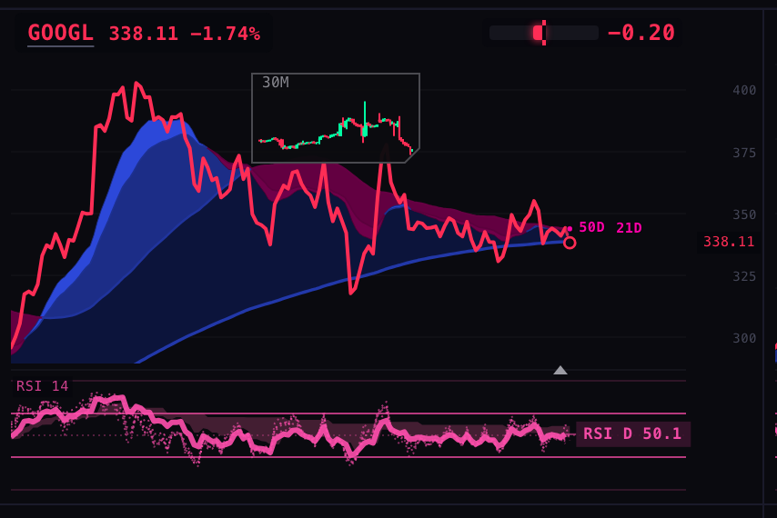
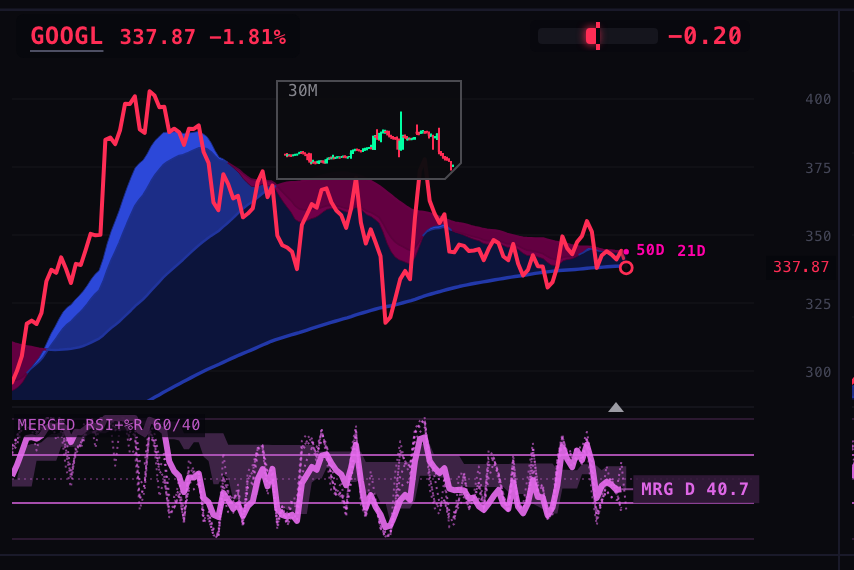
The Station's multi-chart walls (8-up, 2-up, every RSI page) and the Hub's company chart (not expanded) show one pane titled MERGED RSI+%R 60/40. It is built just like the pink RSI pane you approved: five dotted lines (3H, 4H, 6H, 8H, 12H), one thick solid daily line, a slow cloud behind them (2D, 3D, W, 2W), the 30/70 guides and a tag on the daily value ("MRG D 40.7"). The colour is an orchid version of the same pink, so it reads as a cousin of the RSI rather than a new thing.
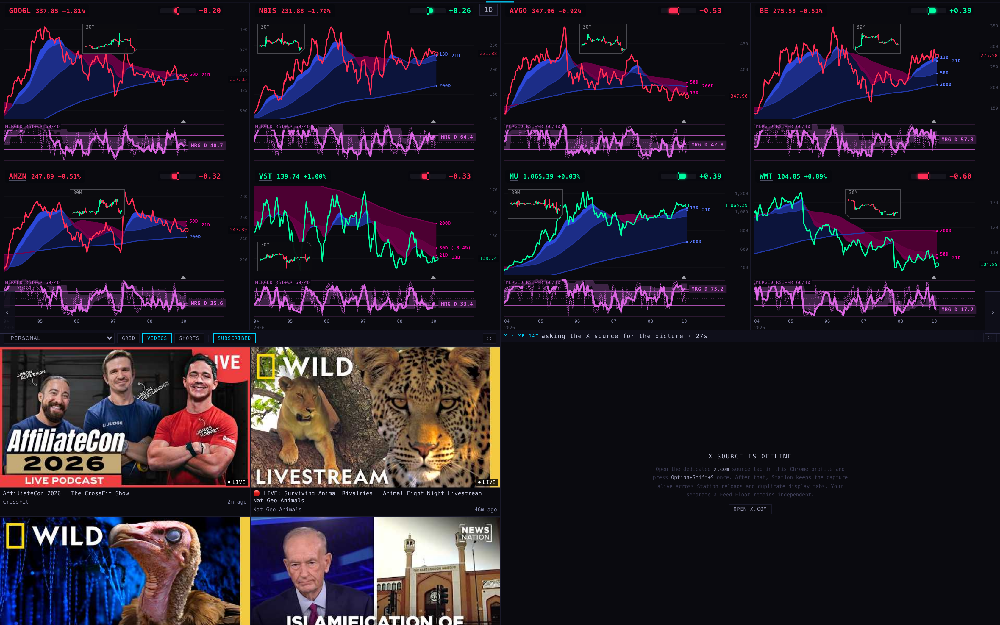
Given the room, the chart stacks three panes under the price, sharing its dates and its crosshair: merged on top, then RSI (exactly the approved pink pane), then Williams %R in cyan on its own −100…0 scale with −20 and −80 guides (Williams' usual "overbought / oversold" lines). Each pane has its title top-left and its daily tag at the right.
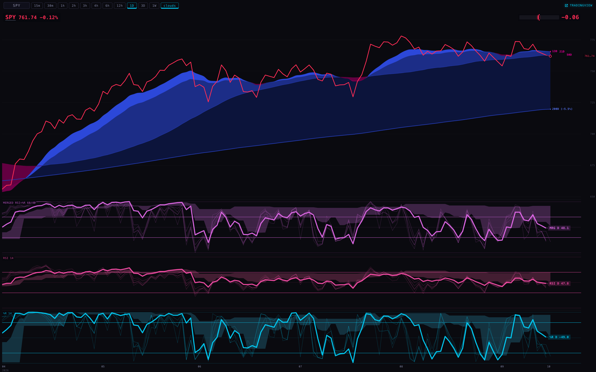
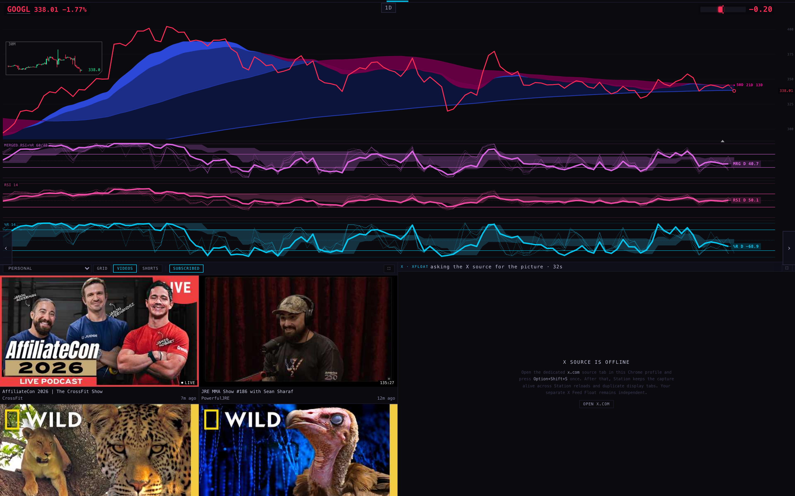
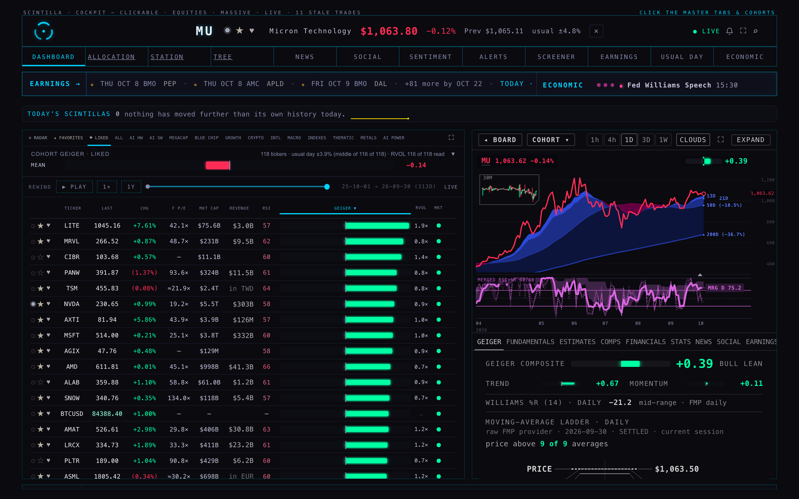
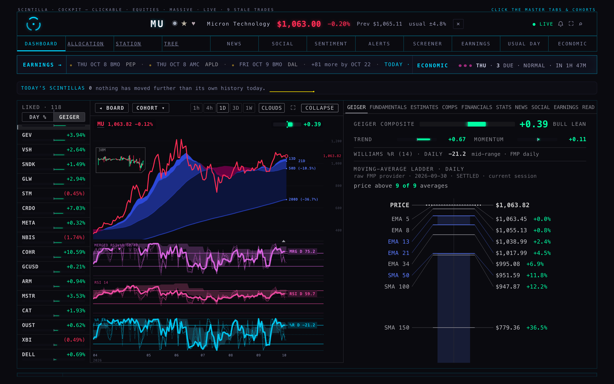
Hovering puts the date line through the price and every pane. Each pane's title row then reads every timeframe at that date. On the merged pane each timeframe shows its merged value and both ingredients, e.g. 3H 70.1 R54.8 W−20.5 = merged 70.1, from RSI 54.8 and Williams −20.5.
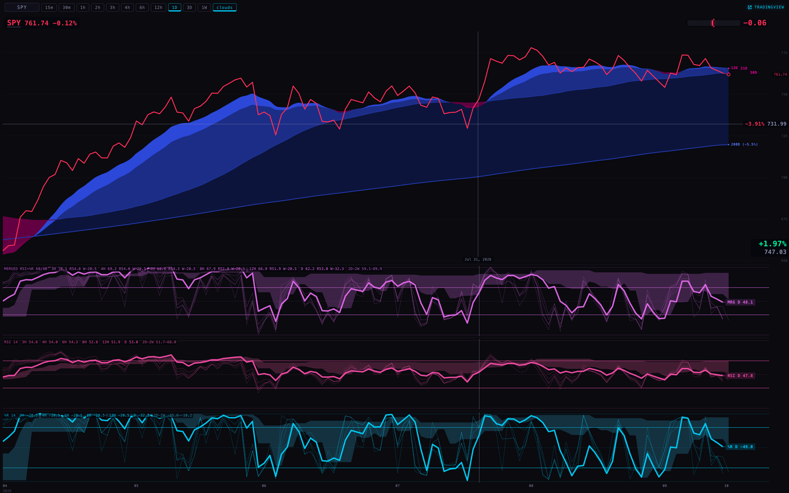
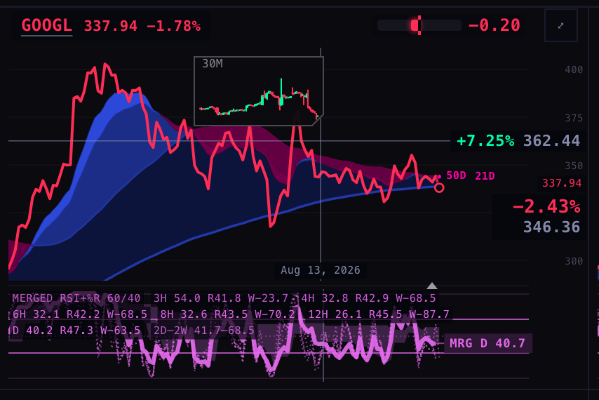
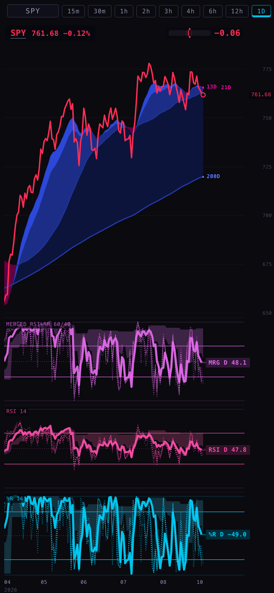
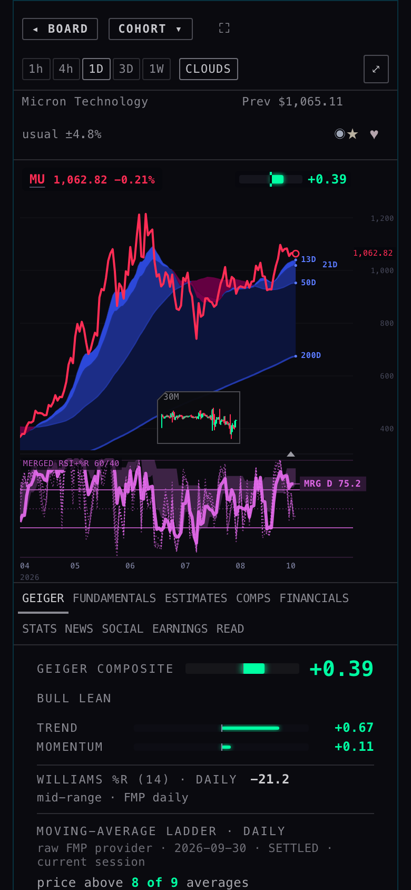
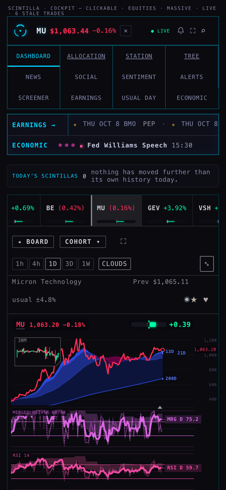
geiger-publish-artifact.mjs, provider 2cce315; mix 0.6/0.4 from the Equalizer snapshot): RSI 23 → −1 … 77 → +1, Williams −90 → −1 … −10 → +1 (each capped at ±1), then 60% + 40%. Drawn on 0–100 as (value + 1) × 50, so 50 = neutral and it sits with the RSI's 30/70 guides.The test runs the publisher's own code (copied word for word) on 230 saved chart-API bars and compares it with the Station's arithmetic. They agree to every digit the Geiger stores:
| bars | RSI(14) | Williams %R(14) | merged (−1…+1) | on the pane | the pane drew |
|---|---|---|---|---|---|
| SPY daily, 30 Sep | 47.8168 | −48.9820 | −0.038335 | 48.08 | D: RSI 47.82 · %R −48.98 · MRG 48.08 |
| MU 4H, 1 Oct 08:00 ET | 45.9897 | −59.0783 | −0.179902 | 41.00 | 4H: RSI 45.99 · %R −59.08 · MRG 41.00 |
| BTCUSD daily, 30 Sep | 60.1441 | −34.8587 | +0.376837 | 68.84 | D: RSI 60.14 · %R −34.86 · MRG 68.84 |
"The pane drew" is read from the screenshots' own record (shots/after-shots.json). The Station computes RSI over its whole history and the publisher over the last 230 bars; on these three they match to two decimals. On a short history they could differ by a few tenths (Alan's "apples to apples" point).
forming=1 at 13:00 ET it returned completed days only), so every daily tag says "confirmed", before and after alike.Station: 936 tests, 18 failing — the same 18 that fail on live. Hub: 1,629 tests, 5 failing — the same 5. New: 10 Station tests (maps, blend, publisher parity, Williams edge cases, built bars' high/low, the pane switch, the three panes' room, colours, wiring) and 2 Hub tests (the EXPAND message). Four older Station pins (in three test files) that named the exact lines S6 replaces were updated to the new lines.
Screenshots: headless Chrome, 1680 and 390 wide, device scale 2. The Station was served locally as station.scintillahub.ai and the Hub page as scintillahub.ai; the chart API was read by the harness with the scintillahub.ai origin and handed back with CORS relaxed. Every non-GET request was blocked. Harness: harness/shots.mjs.